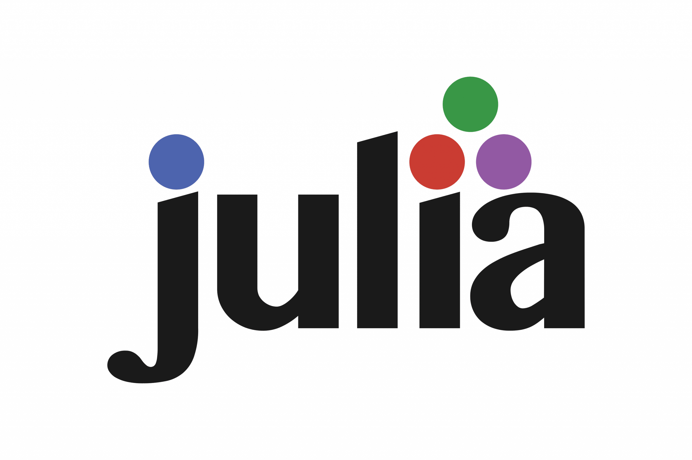

Julia ecosystem
Biref presentation of the Julia ecosystem

The work on Julia began in 2009 when Jeff Bezanson, Stefan Karpinski, Alan Edelman and Viral B. Shah set out to create a free language that was both high-level and fast. The first public appearance is in 2012. Julia’s syntax is now considered stable, since version 1.0 in 2018. Julia is a high-level, general-purpose dynamic programming language, still designed to be fast and productive, for e.g. data science, artificial intelligence, machine learning, modeling and simulation, most commonly used for numerical analysis and computational science. See the Julia Wikipedia page for more details.
On the Julia official webpage one can find the following summary of Julia ecosystem.

Data Visualization and Plotting
Data visualization has a complicated history. Plotting software makes trade-offs between features and simplicity, speed and beauty, and a static and dynamic interface. Some packages make a display and never change it, while others make updates in real-time.
Plots.jl is a visualization interface and toolset. It provides a common API across various backends, like GR.jl, PyPlot.jl, and PlotlyJS.jl. Makie.jl is a sophisticated package for complex graphics and animations. Users who are used to “grammar of graphics” plotting APIs should take a look at Gadfly.jl. VegaLite.jl provides the Vega-Lite grammar of interactive graphics interface as a Julia package. For those who do not wish to leave the comfort of the terminal, there is also UnicodePlots.jl.

Build, Deploy or Embed Your Code
Julia makes it possible to build complete applications. Write web UIs with Dash.jl and Genie.jl or native UIs with Gtk4.jl. Pull data from a variety of databases. Build shared libraries and executables with PackageCompiler. Deploy on a webserver with HTTP.jl or embedded devices. Powerful shell integration make it easy to managing other processes.
Julia has foreign function interfaces for C, Fortran, C++, Python, R, Java, Mathematica, Matlab, and many other languages. Julia can also be embedded in other programs through its embedding API. Julia’s PackageCompiler makes it possible to build binaries from Julia programs that can be integrated into larger projects. Python programs can call Julia using juliacall. R programs can do the same with R’s JuliaCall, which is demonstrated by calling MixedModels.jl from R. Mathematica supports calling Julia through its External Evaluation System.

Interact with your Data
The Julia data ecosystem provides DataFrames.jl to work with datasets, and perform common data manipulations. CSV.jl is a fast multi-threaded package to read CSV files and integration with the Arrow ecosystem is in the works with Arrow.jl. Online computations on streaming data can be performed with OnlineStats.jl. The Queryverse provides query, file IO and visualization functionality. In addition to working with tabular data, the JuliaGraphs packages make it easy to work with combinatorial data.
Julia can work with almost all databases using JDBC.jl and ODBC.jl drivers. In addition, it also integrates with the Spark ecosystem through Spark.jl.

Scalable Machine Learning
The MLJ.jl package provides a unified interface to common machine learning algorithms, which include generalized linear models, decision trees, and clustering. Flux.jl and Lux.jl are powerful packages for Deep Learning. Packages such as Metalhead.jl, ObjectDetector.jl, and TextAnalysis.jl provide ready to use pre-trained models for common tasks. AlphaZero.jl provides a high performance implementation of the reinforcement learning algorithms from AlphaZero. Turing.jl is a best in class package for probabilistic programming.

Rich Ecosystem for Scientific Computing
Julia is designed from the ground up to be very good at numerical and scientific computing. This can be seen in the abundance of scientific tooling written in Julia, such as the state-of-the-art differential equations ecosystem (DifferentialEquations.jl), optimization tools (JuMP.jl and Optim.jl), iterative linear solvers (IterativeSolvers.jl), Fast Fourier transforms (AbstractFFTs.jl), and much more. General purpose simulation frameworks are available for Scientific Machine Learning, Quantum computing and much more.
Julia also offers a number of domain-specific ecosystems, such as in biology (BioJulia), operations research (JuMP Dev), image processing (JuliaImages), quantum physics (QuantumBFS), nonlinear dynamics (JuliaDynamics), quantitative economics (QuantEcon), astronomy (JuliaAstro) and ecology (EcoJulia). With a set of highly enthusiastic developers and maintainers, the scientific ecosystem in Julia continues to grow rapidly.

Parallel and Heterogeneous Computing
Julia is designed for parallelism, and provides built-in primitives for parallel computing at every level: instruction level parallelism, multi-threading, GPU computing, and distributed computing. The Celeste.jl project achieved 1.5 PetaFLOP/s on the Cori supercomputer at NERSC using 650,000 cores.
The Julia compiler can also generate native code for GPUs. Packages such as DistributedArrays.jl and Dagger.jl provide higher levels of abstraction for parallelism. Distributed Linear Algebra is provided by packages like Elemental.jl and TSVD.jl. MPI style parallelism is also available through MPI.jl.
JuliaHub
Julia is a modern language and comes with cloud computing and more, see the JuliaHub webpage and the JuliaHub help page.
The Modern Platform for Technical Computing. A single place for modeling, simulation, and user built applications with the Julia language. Designed with access to CPUs and GPUs for multi-threading, parallel and distributed computing, JuliaHub’s supercomputing infrastructure allows teams to model breakthrough science and technology.
With JuliaHub, comes JuliaSim.
JuliaSim is the next-generation, cloud-based platform for model-based design. Using modern scientific machine learning (SciML) techniques and equation-based digital twin modeling and simulation, JuliaSim accelerates simulation times, significantly reducing workflow runtime from months to hours. JuliaSim encompasses block diagrams, acausal modeling, state transition diagram and a differentiable programming language all within a single environment.
JuliaCon
The Julia programming language has its own conference, see the JuliaCon 2024.
Welcome to JuliaCon 2024, the premier annual conference for the Julia programming language community! This exciting event brings together developers, researchers, and enthusiasts from around the globe to celebrate and explore the power and versatility of Julia.

Editors and Ides


I recommend to use VS Code. You can download it here. See the Julia Visual Studio Code Documentation.
Julia for Visual Studio Code is a powerful, free IDE for the Julia language. Visual Studio Code is a powerful and customizable editor. With a completely live environment, Julia for VS Code aims to take the frustration and guesswork out of programming and put the fun back in. We build on Julia’s unique combination of ease-of-use and performance. Beginners and experts can build better software more quickly, and get to a result faster. Julia is an officially supported language on the VS Code docs.
Documentation
In the Julia documentation, you may find:
- some important Links;
- a comparison to other languages;
- a list of advantages of using Julia
but also:
- manuals;
- base documentation;
- standard librairies documentation;
- developer documentation.
In Julia, it is quite common to have the documentation in the form of manuals or tutorials. See Getting Started with Differential Equations in Julia for instance.
Example. Search how to compute the norm of a vector.

The norm function comes from the standard librairy LinearAlgebra.

However, we are not directly at the right place, so I recommend to use the Search docs field.

And now, we have the documentation.

It is also possible to use the help mode:
using LinearAlgebra
?norm